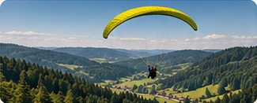
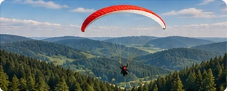
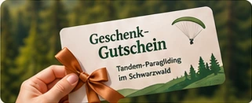

Persönlich begleitet
Gemeinsam mit deinem Tandempiloten.
Natur, Freiheit und atemberaubende Aussichten – erlebe die Wälder und Täler aus einer völlig neuen Perspektive.
Gemeinsam mit deinem Tandempiloten.
Einweisung vor dem gemeinsamen Start.
Wälder, Wiesen und sanfte Berge.
Keine eigene Flugerfahrung nötig.
Finde das Abenteuer, das zu dir passt.

Ein entspannter Tandemflug mit herrlichem Rundblick über die Wälder und Täler.

Für alle, die das Gefühl des freien Fliegens intensiver erleben möchten – wenn das Wetter mitspielt.

Verschenke einen besonderen Moment und die Aussicht auf ein unvergessliches Abenteuer.
Wunschflug und Termin auswählen.
Deinen Piloten kennenlernen und eine Einweisung erhalten.
Gemeinsam starten, die Aussicht genießen und landen.
Entdecke die Faszination des Fliegens über dem Schwarzwald.
Illustrative BeispielbilderFür einen Tandemflug brauchst du normalerweise keine eigene Flugerfahrung. Die individuellen Teilnahmevoraussetzungen werden vor dem Flug geklärt.
Ob ein Flug stattfinden kann, entscheidet der Pilot anhand der aktuellen Bedingungen. Ersatztermine werden individuell vereinbart.
Die konkreten Preise und Flugdauern werden ergänzt, sobald die Angebote bestätigt sind.
Die passende Kleidung und Ausrüstung werden vor dem Termin mit dem Anbieter abgestimmt.
Das tatsächliche Fluggebiet und der Treffpunkt werden bei der Terminvereinbarung mitgeteilt.
Lass den Alltag unter dir und entdecke die Freiheit des Fliegens.
Flug anfragen →Wähle dein Wunscherlebnis. Der Termin hängt unter anderem von den Flugbedingungen ab.
Vorschau: Das Formular erstellt eine Anfrage zum Kopieren. Es sendet noch keine Nachricht und bestätigt keine Buchung.